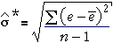
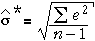
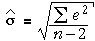

Errors and residuals
We observed earlier that the error, ε, for any data point is its vertical distance from the regression line.
In practice, the slope and intercept of the regression line are unknown, so the errors are also unknown values. However just as the least squares line gives estimates of β0 and β1, the least squares residuals provide estimates of the unknown errors.
| The residuals are therefore estimates of the unknown errors. |
Estimating the error standard deviation
The third unknown parameter of the normal linear model, σ, is the standard deviation of the errors,
σ = st devn ( ε )
A sensible estimate of σ is therefore the sample standard deviation of the residuals,

It can be proved mathematically that the least squares residuals always have mean zero, so this formula is equivalent to

Unfortunately, this estimate tends to be a little too low, and a better estimate is

Cancer deaths and radiation
The Hanford Atomic Energy Plant in the state of Washington in the USA has been a plutonium production facility since World War II and radioactive waste is stored in nearby pits. Some radioactive waste has seeped into the Columbia River, and eight Oregon counties and the city of Portland were exposed to radioactive contamination. The table below shows an index of exposure to radiation from the river that is proportional to river frontage and inversely proportional both to the distance from Hanford and to the square of the county's (or city's) average depth away from the river. Cancer deaths per 100,000 residents are also shown.
| County/city | Exposure index |
Deaths per 100,000 |
|||
|---|---|---|---|---|---|
|
|
|
The diagram below shows the data.
The residuals from the grey line on the scatterplot are shown in a jittered dot plot on the right. Drag the line (by moving the red arrows) to make the residuals small.
Click Least squares to show the least squares line (and hence the best estimates of β0 and β1). The best estimate of σ is found from the least squares residuals and is shown on the bottom right.